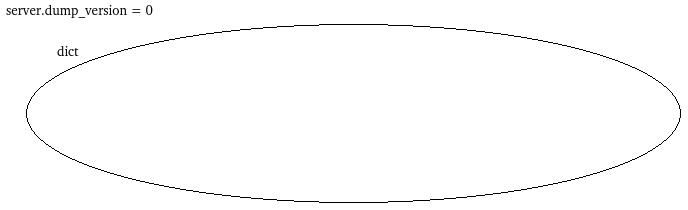
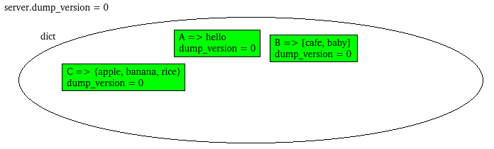
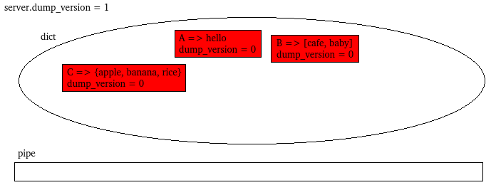
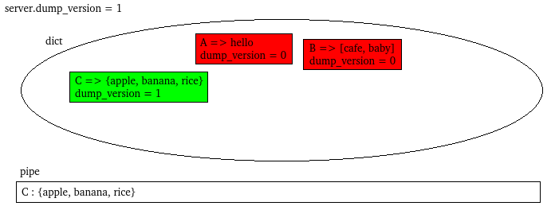
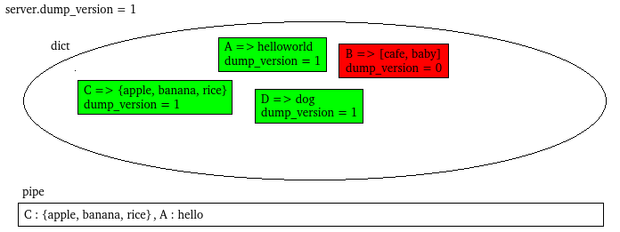
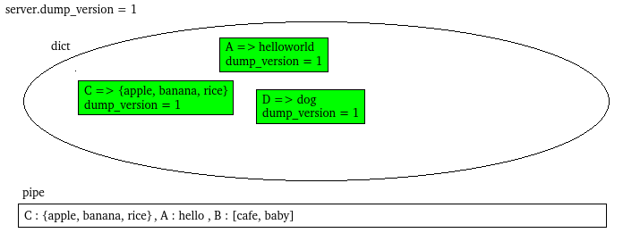
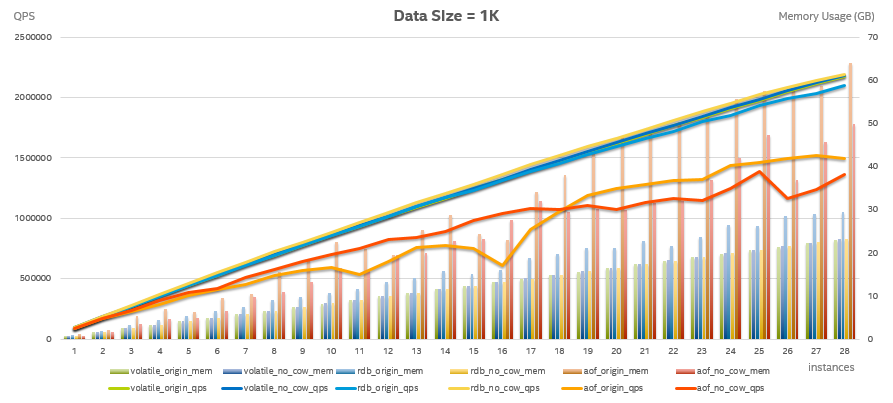

看我博客就可以知道，最近一直在忙活Redis与NVM。其实说白了就是把Redis移植到NVM上去，使得Redis利用NVM的海量空间。
如果只是把NVM当作超级大而且便宜的内存，用于Redis Volatile场景，那么没啥问题。所谓Volatile场景，就是说Redis作为缓存，以加速其他应用（比如MySQL)的速度。该场景下，NVM的持久化特性并未被利用。Volatile场景是Redis绝大多数的使用场景。
但是，在persistent场景下，Redis-NVM就出现问题了。所谓persistent场景，就是指Redis会把数据存入磁盘，这样，当Redis重启后可以恢复数据。比如RDB，是保存某个瞬间Redis的数据库快照。执行bgsave命令，Redis就会保存一个dump.rdb文件，这个文件记录了这个瞬间整个数据库的所有数据。Redis厉害的地方就是，在保存的同时，Redis还能处理命令。那么有一个很有趣的问题——Redis是怎么保证dump.rdb中数据的一致性的？Redis一边在修改数据库，一边在把数据库保存到文件，就不担心脏读脏写问题吗？
这个问题的答案就是，Redis巧妙利用了Linux的Copy On Write(下面简称COW）的特性。具体可以参考《fork()后copy on write的一些特性》，里面解释了什么是COW，以及Redis如何利用COW来获取内存快照。
那么为什么说用了NVM之后，Redis就出问题了呢？因为NVM作为一个/dev下的设备节点，通过mmap()调用映射到进程的虚拟地址空间，而且mmap()中，有MAP_SHARED参数。这是DAX设备共有的特性，应该改不了。于是乎，NVM的那段地址空间，在父子进程之间是共享的，主进程对于NVM的修改对于子进程是可见的。于是脏读脏写发生了。。。
为了让NVM版Redis支持RDB和AOF rewrite，必须手工处理COW问题。目前有若干种方案：
- 根据代码逻辑，手工做Copy On Write——即如果主进程试图修改某个NVM数据，那么先复制一份，在复制品上修改；如果主进程试图释放某个NVM数据，那么就加入一个链表，等dump过程完成后，再真正释放。总之，保证所有子进程能够访问到的NVM数据都保持不变。
- 在主进程中dump，从而规避COW问题。
本文需要阐述的就是第二种方案。
先大致描述一下思路：
首先，需要有一种dict的迭代器，该迭代器需要满足以下要求：
- 在迭代过程中，对dict进行增删改查，对于迭代器是安全的；
- 在开始迭代时，如果某个元素在dict中，而且之后未被删除，那么至少被迭代到一次。
其次，每一个dictEntry都增加一个字段，叫做dump_version。全局也有一个server.dump_version。dump_version用于标记某个dictEntry是否已经被dump过。
再次，有一个管道（不是狭义上的Linux Pipe），能够在两个线程之间传输数据流。该管道提供rio接口；
最后，通过clone()创建一个后台线程（其实就是与主进程共享内存空间的子进程），而不是fork()。
工作流程是这样的：
每次新建一个dictEntry时，令dictEntry.dump_version = server.dump_version。
当启动RDB时：
- server.dump_version++;
- 创建一个dict的迭代器iterator；
- 创建一个管道pipe；
- 创建一个后台线程thread。
在主线程的间隙（比如每次定时任务中，或者每次执行完一个命令），就迭代一个（或少数几个）dictEntry：
- 如果dictEntry.dump_version < server.dump_version，那么说明该dictEntry还未被dump，那么就dump该键值对到pipe，然后dictEntry.dump_version++；
- 如果dictEntry.dump_version == server.dump_version，说明该dictEntry已经被dump过，则跳过。
如果主线程收到一条命令，该命令带有CMD_WRITE标记（可能修改数据），该命令会操作key为K的对象，那么就让K插队——在dict中找到K对应的dictEntry，dump到pipe，然后dictEntry.dump_version++。相当于让K优先被dump出去。
子线程中，不断地读取pipe，写入rdb文件中。
用一个示例+图形化来描述这个逻辑吧~
一开始，Redis是一个空的数据库，用一个空的集合表示。server.dump_version = 0。

之后，Redis执行了如下命令，使得dict中有了若干键值对：
set A hello rpush B cafe rpush B baby sadd C apple sadd C banana sadd C rice

dict中，绿色的dictEntry表示不需要被dump（即dictEntry.dump_version == server.dump_version）。
此时，启动了RDB background save。那么server.dump_version++。于是所有的dictEntry都变红了，表示需要被dump（即dictEntry.dump_version < server.dump_version）。同时，创建一个dict的迭代器iterator、一个rio接口的管道和一个后台线程。

然后，主线程在某个间隙（定时任务中、一条命令执行后），通过iterator迭代一个dictEntry，比如得到C所在的dictEntry，通过rdbSaveKeyValuePair()将其dump到pipe中，然后就把该dictEntry.dump_version++。

假设此时，主线程收到命令：
append A world
解析命令得知该命令会修改数据，而且操作的对象的key是A。那么立刻在dict中找到A所在的dictEntry，通过rdbSaveKeyValuePair()将其dump到pipe中，然后就把该dictEntry.dump_version++。dump到pipe之后，就可以正式着手命令的处理了。

假设此时，主线程收到命令：
set D dog
解析命令得知该命令会修改数据，而且操作的对象的key是D。那么立刻在dict中找到D所在的dictEntry。然而，dict中并不存在D。那么就直接执行命令即可。

假设此时，主线程收到命令：
del B
解析命令得知该命令会修改数据，而且操作的对象的key是B。那么立刻在dict中找到B所在的dictEntry，通过rdbSaveKeyValuePair()将其dump到pipe中，然后就把该dictEntry.dump_version++。dump到pipe之后，就可以正式着手命令的处理了。

之后，主线程在某个间隙，再次迭代，得到A所在的dictEntry。由于发现该dictEntry.dump_version == server.dump_version，说明已经被dump，不再需要dump了。
当主线程把整个dict迭代完了，那么dump过程也就结束了，只需要等待子线程把管道里的数据都写入文件即可。
OK，算法就是这么简单。当然，这里还有一个个细节需要说一下：管道的长度是可以动态增长或收缩的。管道的长度可以通过参数设置，有warning_length和max_length。当管道长度达到warning_length时，主线程中通过usleep()来适当减速，超过warning_length越多，usleep()时间越长。当管道长度达到max_length时，则阻塞主线程，直到管道长度降下来。这种机制实现了前后台的速度匹配，避免了内存占用量无限制地增加。
这种NO_COW改法，完全规避了COW问题，好处是显而易见的：
- 使得NVM内存也不会出错；
- dump过程中，可以通过速度匹配来控制最大的内存消耗量（COW模式下，最糟糕的情况下，整个数据库都会被Copy一份）；
当然，也有一些坏处：
- 将结构化数据转换成文件数据流的操作由主线程执行（周期窃取的思想），对吞吐量略有影响（原本由子线程执行）；
- 如果某个对象非常大，那么主线程dump它时会阻塞很长时间，使得命令响应延迟很高。
第二条加红色的坏处，就是我的这个设计被否决的主要原因，心塞赛:-(
代码在此！基于redis-3.2.7。
这里给出非常棒的性能测试数据：

能够看到Redis-NO-COW在保持性能基本不变的情况下，可以大大减少内存使用量。如果用户确信不会有特别大的数据结构或者对延迟不敏感，但是对硬件成本很在意，那么Redis-NO-COW是一个很不错的选择~